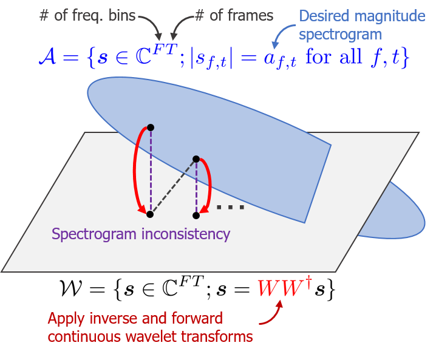
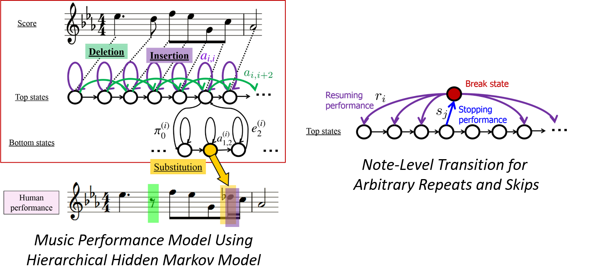

Sampling-Frequency-Independent Deep Learning¶
We propose a DNN-based audio source separation method that can consistently work for audio signals of arbitrary (unseen) sampling frequencies, even if it is trained with a single sampling frequency. Focusing on the fact that a convolutional layer is interpreted as a digital FIR filter, we build a sampling-frequency-independent convolutional layer, of which weights (the impulse responses of the digital filters) are generated from latent analog filters using a classical DSP technique, digital filter design.
たとえ単一のサンプリング周波数で学習されていたとしても，任意の（未学習の）任意のサンプリング周波数にも適用可能なDNNベース音源分離手法を提案しました． 畳み込み層がデジタルFIRフィルタとみなせることに着眼し，古典的な信号処理技法であるデジタルフィルタ設計技法を用いてアナログフィルタからの畳み込み層の重みの生成過程を導入することで，サンプリング周波数に非依存な畳み込み層を構築しました．
- Koichi Saito, Tomohiko Nakamura, Kohei Yatabe, Yuma Koizumi, and Hiroshi Saruwatari, “Sampling-frequency-independent audio source separation using convolution layer based on impulse invariant method,” in Proceedings of European Signal Processing Conference, Aug. 2021, pp. 321–325. paper, arXiv
- Koichi Saito, Tomohiko Nakamura, Kohei Yatabe, and Hiroshi Saruwatari, “Sampling-frequency-independent convolutional layer and its application to audio source separation,” IEEE/ACM Transactions on Audio, Speech, and Language Processing, vol. 30, pp. 2928–2943, Sep. 2022. paper, demo, code
Empirical Bayesian Independent Deeply Learned Matrix Analysis¶
We propose an extension of independent deeply learned matrix analysis (IDLMA), empirical Bayesian IDLMA, that can deal with uncertainty of source power spectrogram estimates at each time-frequency bin using DNN-based hyperparameter estimation of prior distributions of sources.
高性能な多チャネル音源分離手法の1つである独立深層学習行列分析を各時間周波数ビンでの音源パワー推定値の不確実性を扱えるように拡張した，経験ベイズ独立深層学習行列分析を提案しました．
- Takuya Hasumi, Tomohiko Nakamura, Norihiro Takamune, Hiroshi Saruwatari, Daichi Kitamura, Yu Takahashi, and Kazunobu Kondo, “Empirical bayesian independent deeply learned matrix analysis for multichannel audio source separation,” in Proceedings of European Signal Processing Conference, Aug. 2021, pp. 331–335. paper, arXiv
Independent Deeply Learned Tensor Analysis¶
We propose a multichannel audio source separation method based on independent deeply learned matrix analysis, independent deeply learned Tensor Analysis, that can deal with inter-frequency correlations of each source explicitly.
各音源の周波数間相関を陽に扱いつつ，独立深層学習行列分析のアイディアを継承した多チャネル音源分離手法（独立深層学習テンソル分析）を提案しました．
- Naoki Narisawa, Rintaro Ikeshita, Norihiro Takamune, Daichi Kitamura, Tomohiko Nakamura, Hiroshi Saruwatari, and Tomohiro Nakatani, “Independent deeply learned tensor analysis for determined audio source separation,” in Proceedings of European Signal Processing Conference, Aug. 2021, pp. 326–330. paper, arXiv
Multiresolution Deep Layered Analysis: End-to-end Music Source Separation Inspired by Multiresolution Analysis ¶

Focusing on the architectural resemblance between an DNN for end-to-end audio source separation and multiresolution analysis, we propose down-sampling (pooling) layers "reasonable" from the signal processing viewpoint, which has the perfect reconstruction property and the anti-aliasing mechanism. Using the proposed down-sampling layers, we further propose a multiresolution-analysis-inspired end-to-end audio source separation method, multiresolution deep layered analysis.
End-to-end音源分離用DNNと多重解像度解析の構造の類似性に着眼し，完全再構成性，アンチエイリアシングフィルタを備えたダウンサンプリング層を提案しました． さらに，それらの層を用いたend-to-end音源分離手法（多重解像度深層分析）を提案しました．
- Tomohiko Nakamura, Shihori Kozuka, and Hiroshi Saruwatari, “Time-domain audio source separation with neural networks based on multiresolution analysis,” IEEE/ACM Transactions on Audio, Speech, and Language Processing, vol. 29, pp. 1687–1701, Apr. 2021. paper, slides, poster, demo, code, [The Itakura Prize Innovative Young Researcher Award / 第17回日本音響学会・独創研究奨励賞板倉記念]
- Shihori Kozuka, Tomohiko Nakamura, and Hiroshi Saruwatari, “Investigation on wavelet basis function of DNN-based time domain audio source separation inspired by multiresolution analysis,” in Proceedings of International Congress and Exposition on Noise Control Engineering, Aug. 2020, pp. 4013–4022. paper
- Tomohiko Nakamura and Hiroshi Saruwatari, “Time-domain audio source separation based on Wave-U-Net combined with discrete wavelet transform,” in Proceedings of IEEE International Conference on Acoustics, Speech, and Signal Processing, May 2020, pp. 386–390. paper, arXiv
Harmonic-Temporal Factor Decomposition for Unsupervised Monaural Source Separation of Harmonic Sounds ¶

We present an unsupervised monaural source separation method of harmonic sounds, harmonic-temporal factor decomposition, that encompasses the ideas of computational auditory scene analysis, non-negative matrix factorization, and a source-filter model.
計算論的聴覚情景分析，非負値行列因子分解，ソースフィルタモデルを融合した，教師なし調波音分離手法（調波時間因子分解）を提案しました．
- Tomohiko Nakamura and Hirokazu Kameoka, “Harmonic-temporal factor decomposition for unsupervised monaural separation of harmonic sounds,” IEEE/ACM Transactions on Audio, Speech, and Language Processing, vol. 29, pp. 68–82, Nov. 2020. paper, slides, poster, demo, code
- Tomohiko Nakamura, Kotaro Shikata, Norihiro Takamune, and Hirokazu Kameoka, “Harmonic-temporal factor decomposition incorporating music prior information for informed monaural source separation,” in Proceedings of International Society for Music Information Retrieval Conference, Oct. 2014, pp. 623–628. paper, demo, [Travel Grant by the Tateishi Science and Technology Foundation]
Unsupervised Drum Timbre Replacement between Two Music Audio Recordings ¶

We propose a system that allows users to replace the frequency characteristics of harmonic sounds and the timbres of drum sounds of a music audio signal with those of another music audio signal without their musical scores.
楽譜情報なしでも2楽曲間で調波音の周波数特性とドラム音色を置換できるシステムを提案しました．
- Tomohiko Nakamura, Hirokazu Kameoka, Kazuyoshi Yoshii, and Masataka Goto, “Timbre replacement of harmonic and drum components for music audio signals,” in Proceedings of IEEE International Conference on Acoustics, Speech, and Signal Processing, May 2014, pp. 7520–7524. paper, demo
Fast Signal Reconstruction from Magnitude Spectrogram of Continuous Wavelet Transform ¶

We propose a 100× faster signal reconstruction algorithm from a magnitude continuous wavelet transform spectrogram (a.k.a. constant-Q transform spectrogram).
従来法に比べて約100倍高速な振幅連続ウェーブレット変換からの信号再構成（位相推定）アルゴリズムを提案しました．
- Tomohiko Nakamura and Hirokazu Kameoka, “Fast signal reconstruction from magnitude spectrogram of continuous wavelet transform based on spectrogram consistency,” in Proceedings of International Conference on Digital Audio Effects, Sep. 2014, pp. 129–135. paper, demo, [Travel Grant by the Hara Research Foundation]
Score Following and Automatic Accompaniment for Musical Performance During Practice ¶

We propose real-time (O(n) for # of notes) score following methods that can deal with musical performances including typical errors during practice (note insertion, deletion, and substitution errors, and arbitrary repeats/skips).
練習時によく起こる誤り（音符の挿入，脱落，置換誤りや任意の弾き直し，弾き飛ばし）を含む演奏に対して，実時間で動作する（音符に関して線形オーダ）楽譜追跡手法を提案しました．
- Tomohiko Nakamura, Eita Nakamura, and Shigeki Sagayama, “Real-time audio-to-score alignment of music performances containing errors and arbitrary repeats and skips,” IEEE/ACM Transactions on Audio, Speech, and Language Processing, vol. 24, no. 2, pp. 329–339, Feb. 2016. paper, arXiv, demo
- Tomohiko Nakamura, Eita Nakamura, and Shigeki Sagayama, “Acoustic score following to musical performance with errors and arbitrary repeats and skips for automatic accompaniment,” in Proceedings of Sound and Music Computing Conference, Aug. 2013, pp. 299–304. paper, demo, [Travel Grant by the Telecommunications Advancement Foundation]
- c.f. Eurydice (Related MIDI Score Following System)